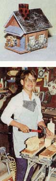
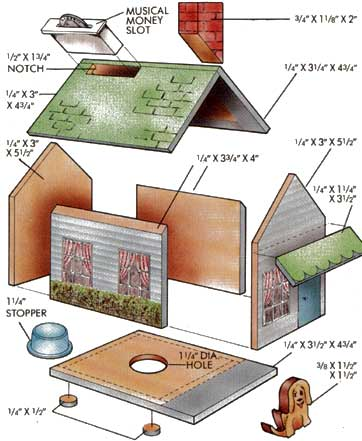

Mother's Children
This enterprising youngster is making money making banks.
I'M 13 YEARS OLD AND ALREADY in the banking business. I build and sell musical banks.
My business started by accident a year and a half ago. I had just finished Cub Scout day camp, school was still several weeks away, and I was bored, bored, bored. Then I happened to remember a wood project my mom had bought for me. I followed one of the patterns and built a house-shaped savings bank.
My grandmother, Fern Henry, suggested I make 10 more. She said she'd put them in the showcase in her art studio, and maybe some art students would buy them. She also suggested I charge $10 each. That sounded good to me!
I took my plans to my grandfather's workshop, and we found enough scraps to make 10 banks. In the meantime, I had found a catalogue that sold some musical-bank insets that looked perfect-every time you dropped in a coin, they played a tune. I ordered 10 "Old MacDonald Had a Farm" insets. [Editor's Note: Jeffrey gets his musical insets and the plastic stoppers for the bank bottoms from National Artcraft Co., 23456 Mercantile Rd., Beachwood, OH 44122.] I also decided to add a porch, a green shrub (cut from a piece of sponge) and a small wooden dog with a string leash.
I was ready, but, boy, making 10 banks was a lot different than building just one. I was too short to use the band saw unless I stood on a box. When I tried to nail the sides together, I needed six hands instead of two. I must have used a box of nails -every other one would bend. I needed help.
When I was all finished, I was so disgusted I thought, "No more of this for me." But then all 10 banks sold before art class even started. I was rich, I was rich!
That is how my business, "A WHALE OF A DEAL (for you to start saving)," started.
My first production run after that was 20 banks. My next was 40. My most recent run, I made 140 banks. I have seven models now, based on different musical tunes:: "Old MacDonald," "Send in the Clowns," "Rock A-Bye Baby," "Over the Rainbow," "Teddy Bears' Picnic," "Twinkle, Twinkle, Little Star" and "Rudolph the Red-Nosed Reindeer."
To get the help I need, I trade out work with my grandparents. My grandfather, Lawrence Henry, cuts out the wood pieces on his table saw (he thinks I'm much too young to use it myself). I nail them together-sometimes with a little help. I also sand all the banks once after assembly and then again after putting on the base coat of paint. Sometimes Grandfather will do the first sanding on the banks, if he's not too busy. My grandmother helps with the detail painting.
In return, I help them. There's always work to be done around their shop or studio. There's also yard work. If grandfather needs some mowing or edging done, I'll do that while he is working the big saw for me. (Of course, I also help even when I am not trading out.)
My little sister, Laurie, helps some, too. She paints the base coat on the chimneys. I pay her 5 cents per chimney, then I sand it and paint the final details.
I have never advertised. I sell mostly by word of mouth and through two stores, one here in McKinney, Texas, and another in a nearby town. At present, I am saving up for a computer, perhaps an IBM PC Model 25. I've just started studying computer in school, and if my business keeps growing, I'll certainly need a computer. I've already sold 210 banks, with another 100 currently in progress. Each one costs me $3 in supplies, and I sell them now for $12 each. So at this point, I figure I've made a net profit of $1,890.
I've had many interesting experiences since I started this, such as the time one kid asked me for a job. That made me feel about 10 feet tall-he was about my age, and here he was asking me for a job. I told him, maybe later, but that my business wasn't quite that big yet.
Actually, I'd rather he go figure out a business of his own. In fact, I hope my example will help lots of other kids start their own businesses.
Maybe even you.
MOTHER is glad to publish well-written articles from young people concerning their original projects or small businesses. However, we recommend that you query (that is, send us a letter telling about the story that you'd like to do) before writing a full article. Send your queries to Mother's Children, Mother Earth News, P.O. Box 70, Hendersonville, NC 28793.
|
 Jeffrey has sold over 210 banks, including his classic, ""Old MacDonald."" |
 |
|